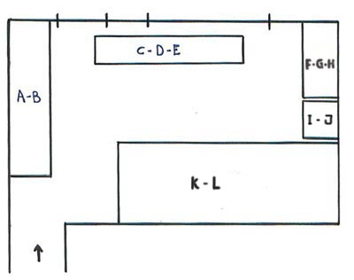
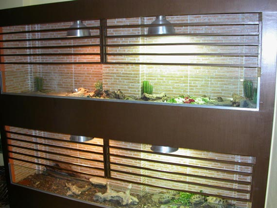
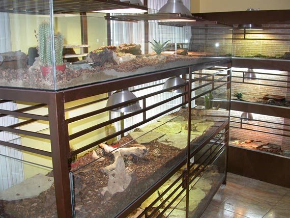
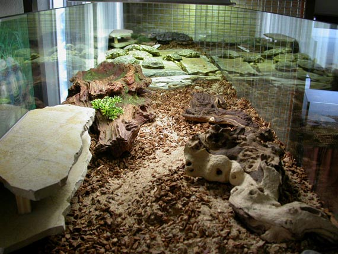
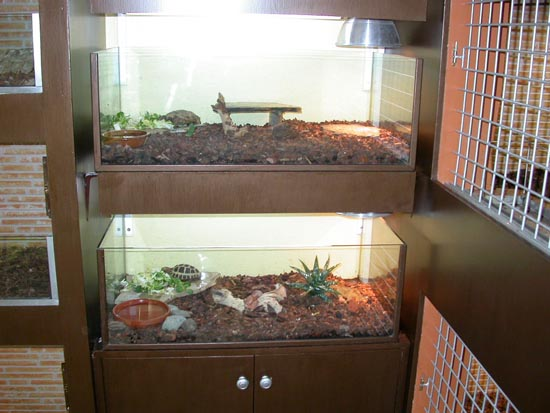
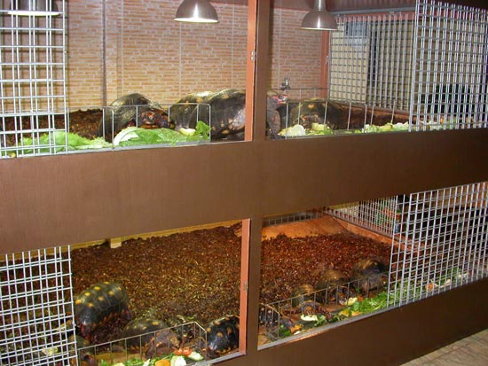
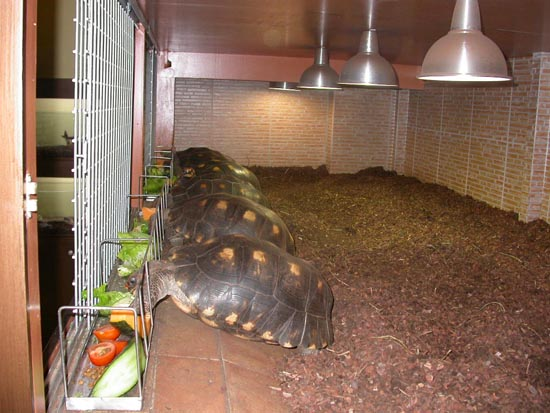

|
TERRARIOS ARTESANALES
ADAPTADOS A ESPACIOS REDUCIDOS
Marcelo L�pez, 2006
Un gran numero de
aficionados que mantenemos tortugas en cautividad, hacemos uso de
terrarios interiores, algunos de forma permanente, porque las especies
que cuidamos no se adaptan al clima de nuestra regi�n, o bien por no
tener disponibilidad de zonas exteriores. Aun disponiendo de estas
�ltimas, si criamos especies tropicales, en la mayor�a de los casos
debemos entrarlas cuando llega el fr�o.
Los terrarios que
por lo general nos ofrece el comercio del sector, nos podr�an servir
para especies de reducido tama�o o cr�as, pero cuando los animales van
creciendo, tenemos que considerar el hacer nuestros propios recintos.
El
abanico de posibilidades que se abre, es muy amplio, pudiendo hacer
uso de muchos materiales para su construcci�n, como son maderas o derivados (muy
utilizada el contrachapado marino), mamposter�a, metacrilato, cristal, etc.
Si hablamos de
dimensiones, m�s de lo mismo, por regla general, es conveniente hacer
los terrarios lo mas amplios posibles, adecu�ndose a los animales que
va a albergar, pero la ventaja que nos da el confeccionarlo nosotros
mismos, es la posibilidad de adaptarlos a los espacios que nos ofrece
la vivienda.
Lo importante es,
que haci�ndolos de una forma o de otra, respetemos los principios
b�sicos de mantenimiento de la especie que va a alojar, teniendo en
cuenta los par�metros adecuados de iluminaci�n, temperatura, humedad, profundidad y calidad del substrato, ventilaci�n, refugios, zona de
alimentaci�n, zonas de puestas, etc.
Por lo tanto, es
evidente que cada aficionado puede montar sus propios recintos. A modo
de ejemplo, las fotos que aqu� se muestran, son de terrarios
construidos todos en la misma habitaci�n, aprovechando a entender del
que suscribe, el espacio disponible al m�ximo posible.
Para comprender la
distribuci�n de los mismos, se adjunta un croquis de la sala,
asign�ndole una letra a cada terrario. En dicha sala, se hallan 11
terrarios de dimensiones diferentes

Croquis de
distribuci�n de terrarios en la sala.

Terrarios A: (T. kleinmanni) B: (A. Horsfieldii).
Se trata de 2
recintos en bater�a, los mismos se hallan fijados a la pared,
construidos sobre una estructura de hierro, revestida con chapa
marina, sobre la cual se pegaron losetas en las paredes internas y la
base, para hacerlos mas higi�nicos y resistentes a la humedad del
substrato. Inicialmente ten�an rejas, actualmente, se reemplazo por un
cristal fijo.


Terrarios C: (Malacochersus
Tornieri ) D: ( G. Elegans) E: ( A. Radiata):
Estos 3 recintos
est�n construidos en cristal, la estanter�a de hierro tambi�n es
artesanal, posee ruedas lo que da la posibilidad de desplazarlo.
Terrarios F: (G.
Chilensis) G: (I. Forsteni) H: (Kinixys).
Estos 3
habit�culos, antiguamente eran un �nico terrario que alojaba una
pareja de Iguanas, al mismo se le hicieron 2 divisiones y quedo este
resultado.

Terrarios
I-J.
Peque�os recintos, construidos en cristal, los mismos aprovechan el
espacio que queda entre 2 terrarios principales, est�n dedicados a
cr�as, animales peque�os reci�n adquiridos, alojamiento temporal, etc.


Terrarios K/L: (G. Carbonaria).
Estos �mega
terrarios� est�n destinados a alojar animales de gran tama�o, en el
superior viven 6 Carbonarias gigantes, todas ellas de m�s de 10 kilos
de peso. En el inferior conviven animales de cabeza roja y de cabeza
amarilla. Estos recintos tienen puertas de reja, debido a que este
material resiste perfectamente los embates de las tortugas grandes.
Los comederos y bebederos son de acero inoxidable, estando algo mas
elevados que el substrato, los barrotes impiden que los animales se
paseen por encima de la comida.
Todos los terrarios
est�n iluminados y calentados por una combinaci�n de l�mparas Powersun
y de bajo consumo instaladas con portal�mparas cer�micos con tulipas
de aluminio, el grado de humedad de los mismos, se consigue en base a
humedecer los substratos con mayor o menor frecuencia, seg�n la
especie en cuesti�n.
El encendido de las
luces esta centralizado en un �nico reloj, el mismo es con bater�a
reserva de 48 horas para que no se desprograme si se corta la luz. Por
la noche no hago uso de calefacci�n, dado que el clima donde se halla
esta instalaci�n lo permite (Gran Canaria).
Como se ha visto, la construcci�n artesanal nos da
posibilidades infinitas, inclusive admiten reformas posteriores.
Adem�s, el dise�ar y fabricar nuestros recintos proporciona un
aliciente adicional, y el contemplar a nuestras tortugas viviendo en
los terrarios que nosotros mismos dise�amos y o construimos, es motivo
de doble satisfacci�n.
|